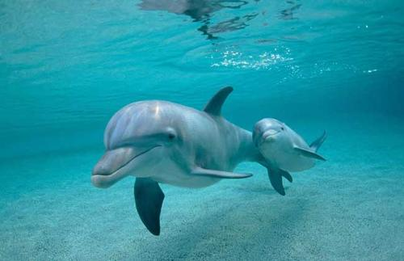
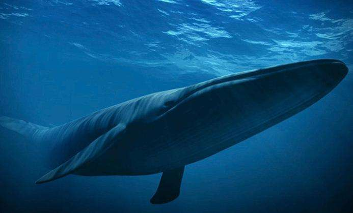
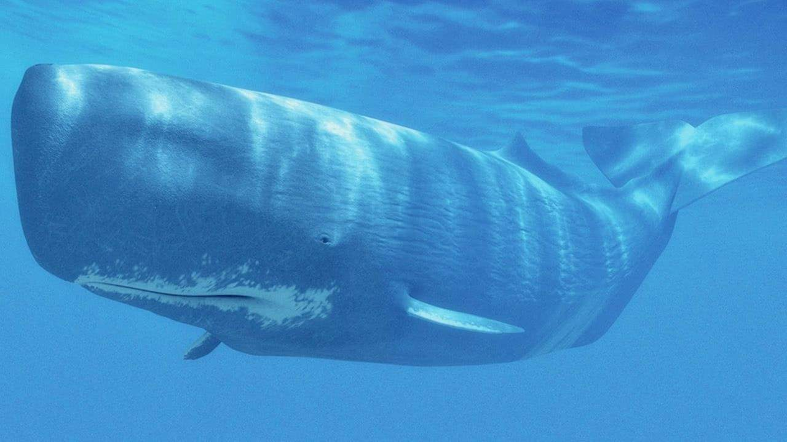
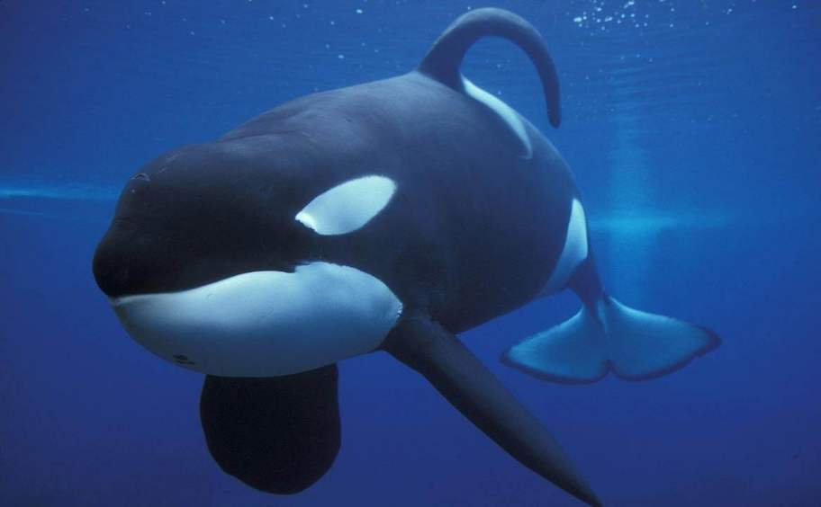
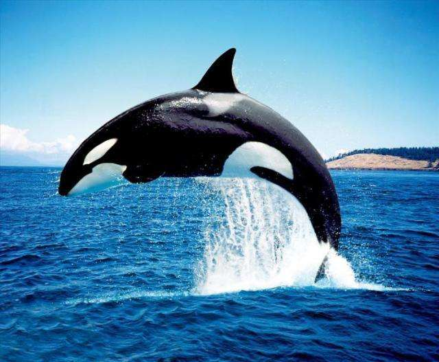
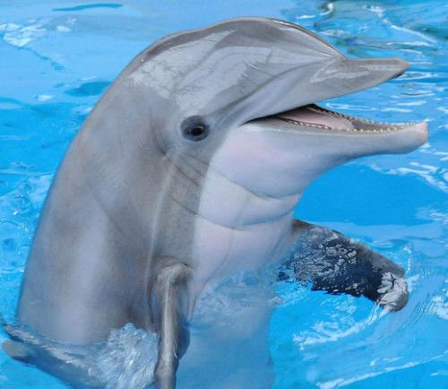
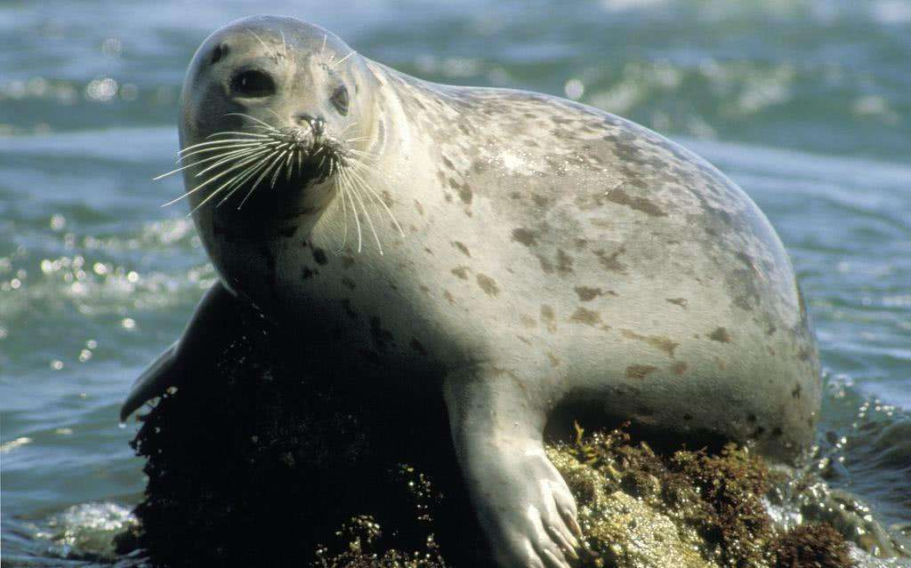

我们人类和陆地脊椎动物都丧失了鱼鳃等排盐器官，也没有进化出具有强大浓缩功能的肾脏，喝海水当然会死得很快啦。但海洋动物有它们自己的办法。
哺乳动物海洋哺乳动物是哺乳类中适于海栖环境的特殊的类群，通常被人们称作为海兽，我国现有各种海兽39种。
 蓝鲸蓝鲸（学名：Balaenoptera musculus）是人类已知的世界上最大的动物，全身呈蓝灰色。目前捕到最大蓝鲸的时间是1904年，地点在大西洋的福克兰群岛附近。这条蓝鲸长33.5米，体重195吨相当于35头大象的重量。它的舌头重约3吨它的心脏重700公斤，肺重1500公斤，血液总重量约为8吨～9吨，肠子有半里路长。这样大的躯体只能生活在浩瀚的海洋中。 [2] 蓝鲸是地球上首屈一指的巨兽，论个头堪称兽中之“王”。蓝鲸还是绝无仅有的大力士。一头大型蓝鲸所具有的功率可达1700马力，可以与一辆火车头的力量相匹敌。它能拖拽800马力的机船，甚至在机船倒开的情况下，仍能以每小时4海里～7海里的速度跑上几个小时。蓝鲸的游泳速度也很快，每小时可达15海里。蓝鲸有一个扁平而宽大的水平尾鳍，这是它前进的原动力，也是上下起伏的升降舵。由前肢演变而来的两个鳍肢，保持着身体的平衡，并协助转换方向，这使它的运动既敏捷又平稳。
 抹香鲸抹香鲸（拉丁学名：Physeteridae）头重尾轻，宛如一头巨大的蝌蚪 ，头部占去全身的三分之一，看上去像个大箱子。鼻孔也很特殊，只有左鼻孔畅通，且位于左前上方；右鼻孔堵塞。所以，它呼气时喷出的雾柱是以45°角向左前方喷出的。虽然抹香鲸的牙齿很大足有20多厘米长，每侧有40枚～50枚，却是只有下颌有牙齿，而上颌只有被下颌牙齿“刺出”的一个个的洞。不过，抹香鲸习性与蓝鲸截然不同的是它比蓝鲸还要厉害，猎物一旦被它咬住就难以脱身。它最喜欢吃的食物是深海大王乌贼。 [3] 在所有鲸类中，以抹香鲸的潜水为最深，可达2200米。抹香鲸的经济价值很高，巨大的“头箱”中盛有一种特殊的鲸蜡油，过去人们误以为是脑子里流出来的，所以叫它“脑油”。其实“脑油”与脑无关，这是一种用处很大的润滑油，许多精密仪器，如手表、天文钟甚至火箭，都离不了它一头大的抹香鲸的头部装的那些油。著名的龙涎香就是这种鲸肠道里的异物，这是一种极好的保香剂，抹香鲸的名字也是由此而来的。
 虎鲸虎鲸（学名：Orcinus orca）也属于齿鲸类。它体长近10米，重7吨～8吨，雌的略小一些，也有6米～8米。 [4] 虎鲸胆大而狡猾，且残暴贪食，是辽阔海洋里“横行不法的暴徒”。虎鲸的英文名称有杀鲸凶手之意。不少人在海上屡屡目睹虎鲸袭击海豚、海狮以及大型鲸类的惊心动魄的情景。 虎鲸的口很大，上、下颌各有二十几枚10厘米～13厘米长的锐利牙齿，大嘴一张，尖齿毕露，更显出一副凶神恶煞的样子。牙齿朝内后方弯曲，上下颌齿互相交错搭配，与人的两手手指交叉搭在一起的形式相似。这不仅使被擒之物难逃虎口，而且还会撕裂、切割猎物。虎鲸很好辨认。在它的眼后方有两个卵形的大白斑，远远看去，宛如两只大眼睛；其体侧还有一块向背后方向突出的白色区域，使它独具一格。 虎鲸身体强壮，行动敏捷，游泳迅速，每小时可达30海里。游泳时，雄鲸高达1.8米的背鳍突出于水面上，颇与一种古代武器——“戟”倒竖于海面的形状相似，虎鲸因此而另有“逆戟鲸”和海中之虎的别名。
 齿鲸齿鲸类的体形变异比较大，最小的种类体长仅有1米左右，最大也在20米以上。口中具有圆锥状的牙齿，但不同种类牙齿的形状、数目相差也很大，最少的仅具1枚独齿，最多的则有数十枚，有的还隐藏在齿龈中不外露，所以也是进行分类的重要依据之一。外鼻孔只有1个，因此呼吸换气时只能喷出一股水柱。头骨左右不对称。鳍肢上具有5指。胸骨较大。没有锁骨。没有盲肠。主要以乌贼、鱼类等为食，有的还能捕食海鸟、海豹以及其他鲸类等大型动物。齿鲸类在全世界共有河豚科、抹香鲸科、剑吻鲸科、一角鲸科、尖嘴海豚科、鼠海豚科、海豚科和领航鲸科等8个科，大约34属、72种。
 海豚海豚（拉丁学名: Delphinidae）也是一种小型齿鲸动物。 过去人们常说，在动物界中猴子是最聪明的动物。但事实证明，海豚比猴子还要聪明。有些技艺，猴子要经过几百次训练才能学会，而海豚只需二十几次就能学会。如果用动物的脑占身体重量的百分比来衡量动物的聪明程度，那么海豚仅次于人，而猴子名列第三。 海豚经过训练后，不仅可以表演各种技艺，例如顶球、钻火圈……而且在人的特殊训育下，它们可以充当人的助手，戴上抓取器可以潜至海底打捞沉入海底中的物品，如实验用的火箭、导弹等，或给从事水下作业的人员传递信息和工具，还能进行军事侦察，甚至充当“敢死队”，携带炸药和弹头冲击敌舰或炸毁敌方水下导弹发射装置。
 海豹在海滨公园的海豹池中，海豹（拉丁文学名:Phoca hispida）整日游泳戏水生动活泼，实在逗人喜爱。若加以训练，它还会表演玩球等节目。 海豹身体浑圆，形如纺锤，体色斑驳，毛被稀疏，皮下脂肪很厚，显得膘肥体胖。两只后脚恒向后伸，犹如潜水员的两只脚蹼。游起泳来，两脚在水中左右摆动，推动身体迅速前进。从海豹的头部看，貌似家犬，因而不少地区称其为海狗。有时它爬到礁石上，这时它的动作就显得格外笨拙，善于游泳的四肢只能起支撑作用。海豹爬行的动作非常有趣，因此常引起观者的朗朗笑声。 海豹的身体不大，仅有1.5米～2.0 米长，最大的个体重150公斤，雌兽略小，重约120公斤。 在自然条件下，海豹有时在海里游荡，有时上岸休息。上岸时多选择海水涨潮能淹没的内湾沙洲和岸边的岩礁。例如，在我国的辽宁盘山河口及山东庙岛群岛等地都屡见有大群海豹出没。海豹的潜水本领很高，一般可潜到100米左右，在水深的海域还可潜到300米，在水下可持续23分钟。它的游泳速度也很快，一般可达每小时27公里。海豹主要捕食各种鱼类和头足类，有时也吃甲壳类。它的食量很大，一头60公斤～70公斤重的海豹，一天要吃7公斤～8公斤鱼。海豹的后肢却是恒向后伸，不能朝前弯曲，故不能在陆地上步行。
 海狮海狮（学名：Otarriinae）吼声如狮，且个别种颈部长有鬃毛，又颇像狮子，故而得名。它的四脚像鳍，很适于在水中游泳。海狮的后脚能向前弯曲，使它既能在陆地上灵活行走，又能像狗那样蹲在地上。虽然海狮有时上陆，但海洋才是它真正的家，只有在海里它才能捕到食物、避开敌人，因此一年中的大部分时间，它们都在海上巡游觅食。 海狮主要以鱼类和乌贼等头足类为食。它的食量很大，如身体粗壮的北海狮，在饲养条件下一天喂鱼最多达40公斤，一条1.5公斤重的大鱼它可一吞而下。若在自然条件下，每天的摄食量要比在饲养条件下增加2倍～3倍。 海狮也是一种十分聪明的海兽。经人调教之后，能表演顶球、倒立行走以及跳越距水面1.5米高的绳索等技艺。海狮对人类帮助最大的莫过于替人潜至海底打捞沉入海中的东西。自古以来，物品沉入海洋就意味着有去无还，可是在科学发达的今天，一些宝贵的试验材料必须找回来，比如从太空返回地球而又溅落于海洋里的人造卫星，以及向海域所做的发射试验的溅落物等。当水深超过一定限度，潜水员也无能为力。可是海狮却有着高超的潜水本领，人们求助它来完成一些潜水任务。例如，美国特种部队中一头训练有素的海狮，在1分钟内将沉入海底的火箭取上来，人们付给它的“报酬”却只是一点乌贼和鱼。这真是一本万利的好生意！
 儒艮
儒艮
在我国广东、广西、台湾等省沿海生活着一种海兽，叫儒艮（学名：Dugong dugon）。 儒艮 儒艮 它的名字是由马来语直接音译而来的，也有人称它为“南海牛”，它与海牛目的其它动物如海牛的最大区别在于：海牛的尾部呈圆形，而儒艮尾部形状与海豚尾部相似。除我国外，儒艮还分布于印度洋、太平洋周围的一些国家。有人说它是海洋中的美人鱼。 儒艮是海洋中唯一的草食性哺乳动物，一点也不凶。儒艮以海藻、水草等多汁的水生植物以及含纤维的灯心草、禾草类为食，但凡水生植物它基本上都能吃。儒艮每天要消耗45公斤以上的水生植物，所以它有很大一部分时间用在摄食上。儒艮体长3米左右，体重达400公斤左右，行动迟缓，从不远离海岸。它的游泳速度不快，一般每小时2海里左右，即便是在逃跑时，也不过5海里。 儒艮体色灰白，体胖膘肥，油可入药，肉味鲜美，皮可制革。正因为如此，所以屡遭人类杀戮，如不严加保护，它们就有灭顶之灾。因此，儒艮已被列为国家一级保护动物。